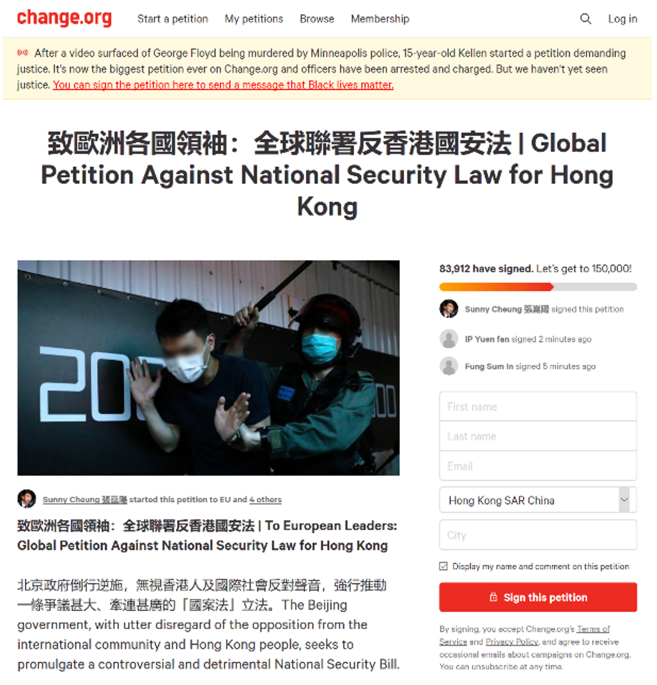

Comparing Gephi and NodeXL for Twitter Network Analysis -- A Case Study of Hong Kong National Security Law
June 8, 2020 By Joyce Jiang
Photo by Joseph Chan on Unsplash
In this case study, I’ll be comparing two Twitter network analysis tools, NodeXL and Gephi, for a same subject: Hong Kong National Security Law announced in the week of May 18, 2020 (around May 24), while “Washington's reaction to Beijing's announcement was swift” around May, 27, 2020. The announcement has been raised discussion among different communities on Twitter, such as Hong Kong people, news outlets, and political figures in both Hong Kong and the US.
NodeXL
The tool has an embedded clustering algorithm called Clauset-Newman-Moore (CNM), which is suitable for large network clustering. NodeXL captures all kinds of engagement on Twitter, which include tweet, retweet, replies, and mentions.
The following network shows Twitter search results of:
- #NationalSecurityLaw Hong Kong , May 30 – June 1 (Graph 1)
In Graph 1.2, the nodes with profile photos are users that received the highest engagement (usually received the most mentions) on Twitter. Users will get more mentions in three scenarios: (1)they are reliable sources of information cited frequently by Twitter users, (2)they receive many replies because replies automatically include mentions, (3) they are important figures so people mention them in conversation – all these three features make the prominent nodes opinion leaders in this network. Major clusters and opinion leaders in this network are:
G1: Local news, informative news network
- Woppa: covering Hong Kong Protest and supporting Hong Kong’s independency
- Stand News
G2: Local news and featured reporters
- HKFP, Freedom HK, Apple News Daily
- Jimmy Lai: editor from Apple News Daily, supporting protests
- Truth about China
- Inter-Parliamentary Alliance on China (IPAC): An international cross-party group of legislators working to reform the approach of democratic countries to China
G4: Activists
- Joshua Huang: activist, working at Demosisto
- Sunny Cheung: activist student, HKFS Student Organization
- Nathan Law: activist, founding chair of Demosisto
G5+G6: International news
- Mike Pompeo (US Secretary), Donald Trump
- US News Outlets: Fox Business, Reuters, AFP news agency, Mornings with Maria (top reporter at Fox Business)
- G6 cluster: The Epoch Times, Frank Fang (reporter of Epoch time), NTD News (sister news outlet of The Epoch Times)
The top website domain in most communities was HKFP (HK), which demonstrates its influence in addressing recent social unrest issues in Hong Kong. SCMP (mainland/HK), Reuters (UK), The Epoch Times (US), The Pigeon Express (unidentified), The Guardian (US), YouTube (international) and NYTimes (US) also appeared frequently in several communities. However, the webpage that dominated activist community was the following page from change.org, which allowed viewers to sign a petition for objecting National Security Law. The popularity of change.org demonstrates activists’ active participation in supporting democracy and objecting this national policy.

Interestingly, the US political influencers and media outlets have been mentioned a lot in the discussion of National Security Law. Obviously, republicans, such as Donald Trump, Mike Pompeo and Fox Business, were more dominated in the network than democrats. Here are some sample tweets that mentioned these republicans:
- @dcexaminer @realDonaldTrump While Hong Kong ers have tried our very best to fight against the #NationalSecurityLaw and the #HKPoliceState , would USA and the world please #StandWithHongKong and help us to fight against the CCP
- The #CCP has passed the #NationalSecurityLaw. This is going to destroy Hong Kong's freedom of speech and deprive the right to protest.Hong Kong is no longer autonomous from China.I beg @BorisJohnson @realDonaldTrump to #SanctionCCP.üôèüèΩ
- @SecPompeo Thanks for Standing with HongKongers!! WE will not surrender!
- #China has crossed lines, and now it will not stop until it is stopped. #Hong Kong is our first test. #NationalSecurityLaw @MariaBartiromo @MorningsMaria @FoxBusiness
Hong Kong people were calling for help from republicans probably because Republican is the ruling party in the US or republicans are generally more aggressive in their political stances.
The red edges refer to the tweets that had negative sentiments, which were more prominent in G2, G5 and G6. G4 did not contain negative sentiments because all activists were promoting petition from change.org, which was a neutral content. G2 included the local new reports that had negative attitudes toward the announcement of the law. G5 + G6 included tweets shared by “helpless” Hong Kong people who were “seeking for help” from the US Republican.
Gephi
This tool can visualize the relationship of most tonologies in network analysis. I will address three of them in the following networks:
- Clusters: identify different communities in a Twitter network
- PageRank: iterate the importance of all nodes in a network, identify the importance of the connected nodes to one node, and determine the importance of this node (similar to Google Page Rank)
- Betweenness: identify gatekeepers of the spread work, the node with high betweenness sever as a hub or control the information flow between communities
Gephi can only analyze retweet and mention engagement in separate networks, so I analyzed them separately. The following network shows Twitter search results of:
- Mentions of National Security Law related content
- #NationalSecurityLaw Hong Kong + #NationalSecurityLaw + National Security Law + National Security Laws Hong Kong , May 27 (Graph 2.1.1- 2.1.3)
Mentions in “National Security Law”
Gephi networks demonstrated similar results with NodeXL. Modularity clustering grouped this network into five dominant communities. The larger node means it has higher in-degree value –received more mentions in this Twitter network.
Clusters
The pink cluster was composed by international media houses. Reuters is the leading player in this community, followed by featured press outlets from the US, such as CNBC, TIME, NYTimes, The Guardian, and WSJ, and other international news outlets like The Toronto Star (Canada), MailOnline (UK), AFP (France), etc.
It is clearly that @SecPompeo (Mike Pompeo) led the discussion in the cyan cluster. This cluster included more users from Hong Kong, such as HKFP, and Studio Incendo (a page featuring HK protest photos and videos), Sunny Cheung (student activist), etc. Mike Pompeo received high mentions in this community because he “told Congress Hong Kong is no longer autonomous from China” on May, 27. Hong Kong people were mentioning Mike Pompeo and other US senators for help. This kind of engagement, also found in NodeXL network, occurred in both cyan and pink cluster. Here is a sample of a tweet that mentioned Mike Pompeo:
“HK has been in the news a ton over the last year or so. There have been many pro-democracy demonstrations, a controversial extradition bill, a recently approved national security law, and now @SecPompeo saying that the US will likely end HK's special trade status.”
Similar to what we found in NodeXL, the orange cluster is a group of activists. The media channel Demosisto dominated the discussion, followed by activists like Benedict Rogers (Human rights activist specializing in Asia), Claudia Mo (Hong Kong democratic legislator), etc.
PageRank
The higher the PageRank, the redder the node is, and the more central the node is.
Mike Pompeo, Reuters, and Donald Trump were identified as the most important figures in this network, followed by SCMP, Clare Jim and Noah Sin, Studio Incendo and Luke de Pulford, because they were mentioned by important users.
- Donald Trump was mentioned by Solomon Yue (Republicans Overseas), Jimmy Lai (Apply Daily News), and Mike Pompeo.
- SCMP is dark red also because it was mentioned by Mike Pompeo. Reuters was the most important newspaper.
- Most important figures have large nodes, which means they have been mentioned a lot. The only outlier is the node of Clare Jim and Noah Sin. Since they are journalists from Reuters, they are more likely to be connected with important users.
- Studio Incendo’s photos and videos could be shared by major people and newspapers.
- Luke de Pulford works at IPAC so he is also likely to be frequently mentioned by activists.
Betweenness
The higher the betweenness, the redder the node is, and the more central the node is.
Fewer nodes show the characteristics of betweenness and almost none of the nodes have intermediate level of betweenness. The highest one is Reuters, Gordon G. Chang, wlctv.ca and Wilson Leung.
- Gordon G. Chang: Chinese American columnist, blogger, television pundit, author and lawyer.
- Wilson Leung: Hong Kong barrister (lawyer) and pro-democracy activist.
- ca: independent reporter, videographer, stringer, documentarian
Though Gordon G. Chang and Wilson Leung did not have many mentions, they interacted with each other as well as Reuters, andelctv.ca and activists, which was a wide range of diversified users. Similarly, Luke de Pulford also interacted with US politicians and the activist group.
HKFP has high betweenness because it is the leading media company in Hong Kong. It is interesting to see both Reuters and AFP have high betweenness because they are actually news agencies instead of general media outlets that only target at the public. New agencies would sell news to other media channels, which make them information hubs in this network.
Graph 2.1.3 Betweenness in the Twitter Mentions Network of “National Security Law”
Comparison and Bot Activity
The following two network graphs are used for comparing the important figures in different Twitter networks.
In both of the networks, Wilson Leung is one of the most important players. One outlier I found in “Hong Kong Protests” network is a user named tragictragedy. It wrote in its bio:
“I ’ve been so lazy and I ’m a bot. I want to have a little freedom. I want to have more time and more time.”
This makes sense because a bot would be able to create a lot of retweets as compared to humans, which makes it connected to more important pages on Twitter.
Summary
Twitter network analysis is powerful in visualizing the media landscape and capturing the interaction between social media users regarding the recent social unrest in Hong Kong. From the two networks analyzed, HKFP and SCMP are the leading local news publishers, while Reuters and AFP are the dominate news agencies. US news outlets, such as CNBC, NYTimes and CNN, appear to be the most active influencers. Demosisto is the leading pro-democracy activism media channel in covering the recent protest, followed by Apple News Daily.
From Hong Kong people side, a lot of users were actively engaging with US politicians and senators, such as Mike Pompeo and Donald Trump, and calling for support. Maybe they are trying to get attention from the US side or maybe they are planning on some conspiracy on Twitter because several accounts showed bot-like activities.
A special cluster of users is the activist groups. Most of them are Hong Kong locals who identify themselves as activists in their bios, and some of them are Caucasian foreigners who have Cantonese names in their bios. These activists have been promoting petition of signing to object the new law released by the Chinese government. At the same time, they interacted with Luke de Pulford and IPCA to seek for help from international human right and democratic organizations.
This article use a case study of Twitter research results of #NationalSecurityLaw for demonstration. To learn more about network analysis, you can check out
Comparing Gephi and NodeXL for Twitter Network Analysis